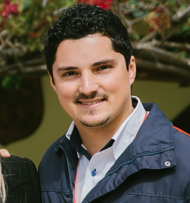

Currículo Fabiano Hoffmann
Jornalista

Contatos
Telefone: +55 (47) 99181-5726
E-mail: fabianohoffmann@outlook.com
Endereço:
Avenida Presidente Vargas, 1675 - Lagoa Vermelha - Rio Grande do Sul
Linkedin:
Meu Perfil
Formação acadêmica
Universidade de Passo Fundo
Jornalista, Comunicação · (2008 - 2012)
Universidade de Coimbra
Jornalista, Comunicação · (2011 - 2011)
Experiência Profissional
Assessor de Comunicação / Produtor de Conteúdo
Empresa: Infographya Comunicação
Período: maio de 2019 - setembro de 2020 (1 ano 5 meses)
Cidade: Curitiba - PR
Principais Funções:
- Redator, produtor de conteúdo como fotos, vídeos e entrevistas;
- Contato com a imprensa local, follow-up, envio de releases e pautas de interesse geral;
- Cobertura de treinamentos, eventos internos, palestras e seminários;
- Envio de e-mail marketing, utilização das plataformas Mailchimp e Wordpress;
- Atualização diária de sites com clipping de interesse dos clientes.
Assessor de Comunicação
Empresa: Beto Carrero World
Período: fevereiro de 2016 - julho de 2018 (2 ano 6 meses)
Cidade: Penha - SC
Principais Funções:
- Produção de textos, reportagens, edição de fotografia e clipping;
- Produção de conteúdo para redes sociais, bem como interação com clientes e SAC 2.0;
- Desenvolvimento e apoio em ações internas, externas e organização de eventos;
- Cobertura de feiras nacionais e internacionais;
- Produção de informativo bimensal, conteúdos para murais e intranet;
- Instrutor de treinamentos para novos colaboradores e endomarketing.
Assistente de Comunicação
Empresa: Universidad Tecnológica El Retoño
Período: julho de 2015 - dezembro de 2015 (6 meses)
Cidade: Aguascalientes e Região, México
Principais Funções:
- Colaborador na primeira universidade bilíngue do México, por meio da AIESEC;
- Organização e cobertura de eventos;
- Produção de fotos, edição e postagem em redes sociais;
- Releases em espanhol, edição de textos e envio para imprensa local;
- Clipping e monitoramento de veículos impressos e digitais;
- Cobertura jornalística em feiras institucionais, entrevistas e reportagens.
Assistente de Comunicação
Empresa: Instituto Tecnológico de Pabellón de Arteaga
Período: março de 2015 - junho de 2015 (4 meses)
Cidade: Pabellón de Arteaga, AGS, México
Principais funções:
- Apoio ao departamento de comunicação;
- Cobertura de eventos da instituição, releases e contato com a imprensa local e nacional;
- Produção e edição de fotos e artes gráficas;
- Monitoramento e abastecimento de site e redes sociais.
Gestor de Comunicação
Empresa: CDL Passo Fundo
Período: fevereiro de 2013 - fevereiro de 2015 (2 anos 1 mês)
Cidade: Passo Fundo e Região, Brasil
Principais funções:
- Produção de matérias, fotos, clipping, dossiês e informativo mensal;
- Desenvolvimento e coordenação de campanhas promocionais e sociais;
- Contato direto com a imprensa;
- Organização de cerimoniais, protocolos e planejamento estratégico anual;
- Realização de campanhas sociais e eventos da entidade.